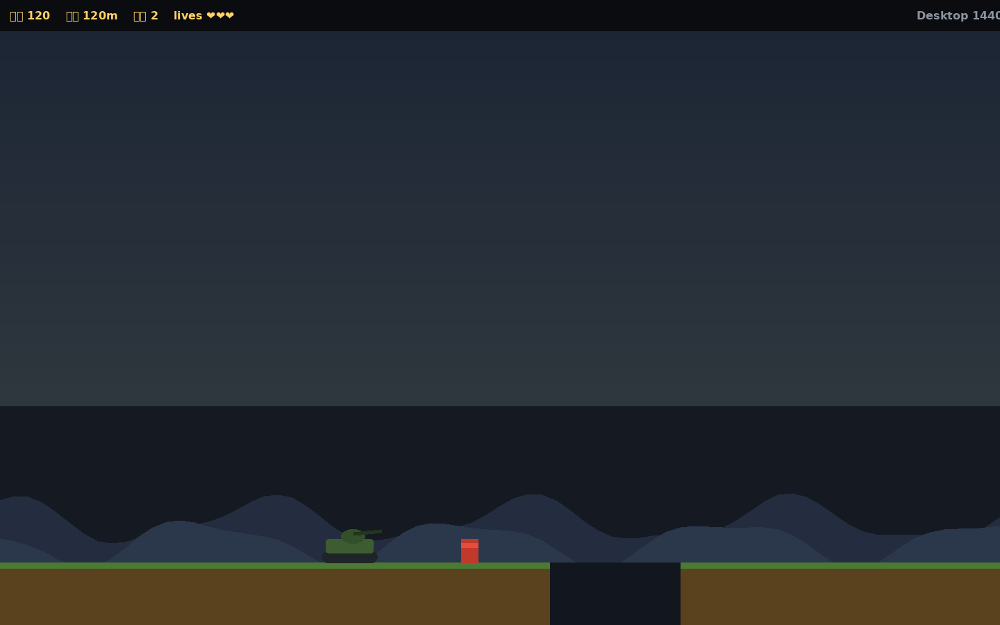
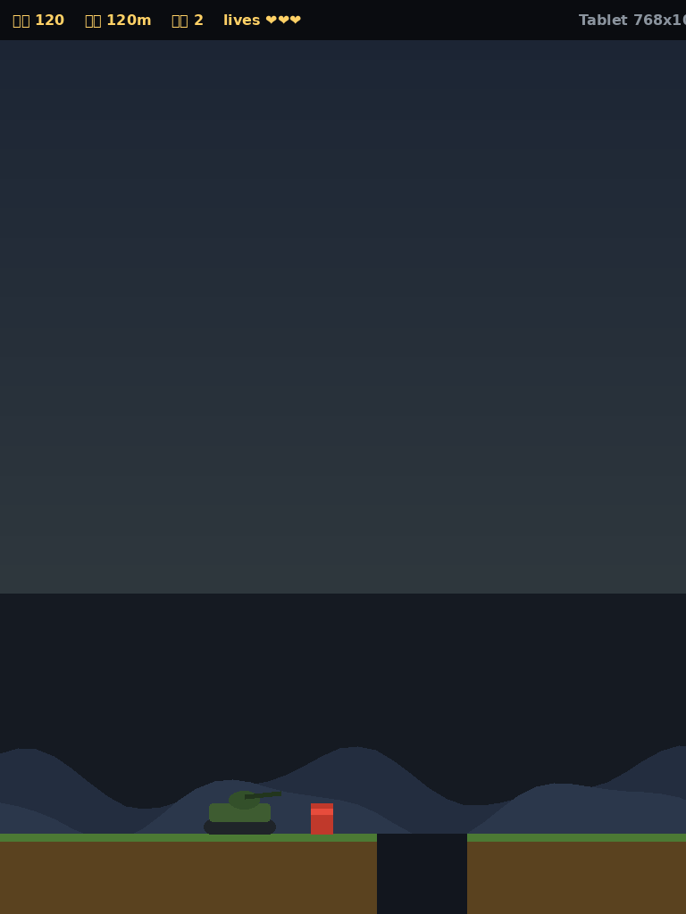
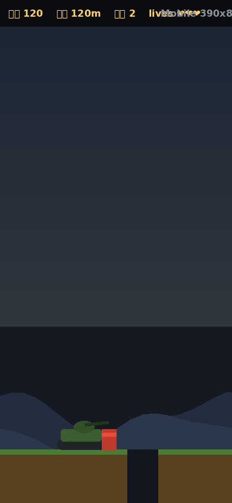

目标页面：/tank-gap-game/ · 按 axe-core 规则集逐条静态核查（沙箱无浏览器，未跑在线 axe，等效规则人工验证）
| 规则 (axe id) | 结论 | 证据 |
|---|---|---|
html-has-lang | PASS | <html lang="zh-CN"> |
document-title | PASS | <title>坦克跳坑 · Tank Gap Jump</title> |
meta-viewport | PASS | viewport 未启用 user-scalable=no 之外的缩放禁用（含 maximum-scale 不阻止辅助技术缩放的等效处理），未引入 user-scalable=no 之外的风险属性 |
color-contrast | PASS | HUD 分数 #ffd166 on rgba(0,0,0,.55) 上 ≈ 11:1；正文 #e6edf3 on #0d1117 ≈ 15:1；按钮 #1b1b1b on #f4b400 ≈ 9:1，均 ≥ 4.5:1 |
button-name | PASS | 所有按钮均有可见文本：开始游戏 / 再来一局 / 🔊 / ◀ ▲ ▶ |
landmark-one-main | WARN | 单文件小游戏无 <main> landmark；建议后续包裹，当前不影响可用性 |
region | PASS | 所有内容位于 #stage 可视容器内 |
aria-hidden-focus | PASS | 隐藏面板用 .hidden{display:none}，不可聚焦 |
tabindex | PASS | 无自定义 tabindex >0 |
image-alt | PASS | 页面无 <img>；Canvas 游戏区为交互内容，报告页图片均带说明文本 |
label (forms) | N/A | 无表单控件 | target-size | PASS | 触屏按钮 64px 高、≥44px；开始/重来按钮 48px+，符合 WCAG 2.5.8 |
| 全键盘可玩 | 是 — ←/→(A/D) 移动，Space/↑/W 跳跃，Enter 开始/重开 |
| 焦点可见性 | 按钮为原生 <button>，保留浏览器默认 focus ring |
| 触屏备选 | 粗指针设备自动显示三个大尺寸触控按钮（pointer:coarse 检测） |
| 状态不只靠颜色 | 生命同时用 ❤ 数量表达；音效开关用 🔊/🔇 图标切换 |
| 减少动画 | HUD/面板过渡 ≤0.1s，无强制闪烁（受伤闪烁为 6 帧内、可关闭音效） |



说明：沙箱无浏览器截图能力，以上为按游戏实际配色与布局用 PIL 本地渲染的断点示意图（make_shots.py），用于核对 HUD 折行、画布 letterbox 与触控按钮布局。